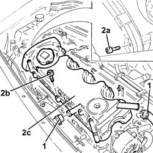
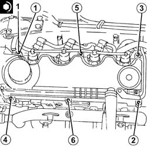

1016A26 cam cover with built in oil vapour separator r r
- Path
- Procedures > 10 ENGINE > 1016 CYLINDER HEAD(S) > 1016A cam covers > 1016A26 cam cover with built in oil vapour separator r r
- Kind
- repair procedure (removal / refitting; the operation number is the code)
- Applies to
- all engines; all production periods
- Interactive page
- https://sloeber94.github.io/elrnDB-fDbl/en/#/2584481
Applies to: all engines; all production periods
 Removing
Removing
 Refitting
Refitting1. Loosen the bands and disconnect the oil vapour recovery pipes from the tappet cover.
2. Undo the bolts (2a) and (2b), then remove the tappet cover with the oil vapour separator (2c) incorporated.

Applies to: all engines; all production periods
Refitting
RemovingPlace the tappet cover with the oil vapour separator incorporated back in its housing.
1. Tighten the bolts fixing the tappet cover with the oil vapour separator incorporated to the recommended torque following the order illustrated.
 | Fastening | Component | Ø | Value (daNm) |
|---|---|---|---|---|
1 | Bolt | CAM COVER | M6 | (Cylinder head side) 0.9 ÷ 1.1 |
Tighten the bolt fixing the protective timing cover to the tappet cover with the oil vapour separator.

Applies to: all engines; all production periods
Connect the oil vapour recovery pipes to the tappet cover and secure with the bands.